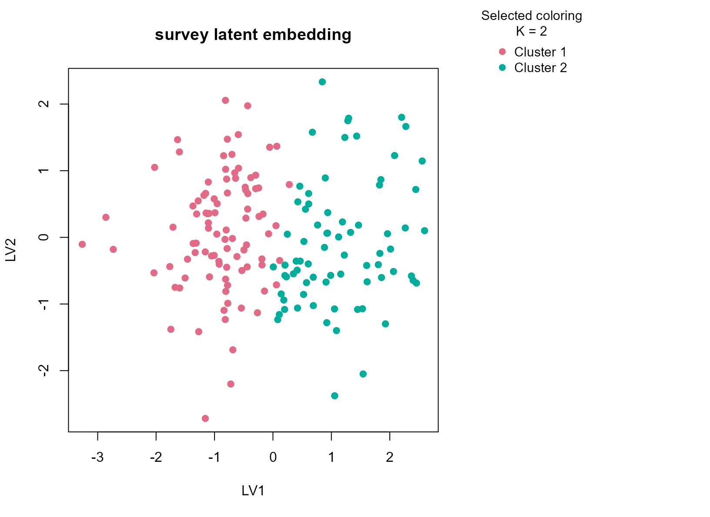
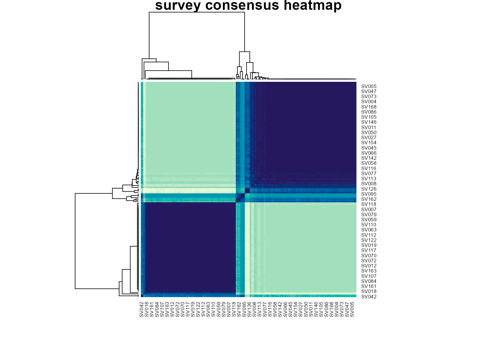

Background
survey from MASS contains hand
measurements, pulse, and lifestyle-related categorical fields collected
from students. It is a useful example of a small social-science table
with genuinely mixed feature types. Unlike the more engineered benchmark
datasets, this table is noisy, behaviorally heterogeneous, and only
partly standardized, which makes it a realistic test of whether a
consensus workflow can stay conservative on ordinary human-subject
data.
Objective
The objective is to test whether uccdf can recover broad
participant strata from anthropometric and lifestyle variables after
removing incomplete rows. The intended use is exploratory: we want to
see whether the data support a stable low-dimensional grouping, not to
claim latent psychological classes.
Data preparation
survey_df <- na.omit(MASS::survey)
survey_df$sample_id <- sprintf("SV%03d", seq_len(nrow(survey_df)))
analysis_survey <- survey_df[, c("sample_id", "Sex", "Wr.Hnd", "NW.Hnd", "W.Hnd", "Pulse", "Clap", "Exer", "Smoke")]
head(analysis_survey)
#> sample_id Sex Wr.Hnd NW.Hnd W.Hnd Pulse Clap Exer Smoke
#> 1 SV001 Female 18.5 18.0 Right 92 Left Some Never
#> 2 SV002 Male 19.5 20.5 Left 104 Left None Regul
#> 5 SV003 Male 20.0 20.0 Right 35 Right Some Never
#> 6 SV004 Female 18.0 17.7 Right 64 Right Some Never
#> 7 SV005 Male 17.7 17.7 Right 83 Right Freq Never
#> 8 SV006 Female 17.0 17.3 Right 74 Right Freq NeverAnalysis
fit_survey <- fit_uccdf(
analysis_survey,
id_column = "sample_id",
candidate_k = 1:5,
n_resamples = 20,
n_null = 39,
row_fraction = 0.85,
col_fraction = 0.85,
min_cluster_size = 10,
gamma_small_cluster = 3,
seed = 444
)
fit_survey$selection
#> $alpha
#> [1] 0.05
#>
#> $global_p_value
#> [1] 0.025
#>
#> $null_family
#> [1] "independence_marginal_null"
#>
#> $detected_structure
#> [1] TRUE
#>
#> $best_exploratory_k
#> [1] 2
#>
#> $best_supported_k
#> [1] 2
select_k(fit_survey)
#> k stability null_mean null_sd stability_excess z_score p_value supported
#> 1 2 0.4757628 0.2131646 0.02205509 0.2625983 11.906467 0.025 TRUE
#> 2 3 0.2384683 0.1352887 0.01334014 0.1031796 7.734517 0.025 TRUE
#> 3 4 0.3070379 0.1356193 0.01269012 0.1714186 13.508027 0.025 TRUE
#> 4 5 0.3889049 0.1618483 0.02241246 0.2270566 10.130815 0.025 TRUE
#> objective
#> 1 11.767838
#> 2 7.514794
#> 3 10.230768
#> 4 6.808927Results
survey_assign <- merge(augment(fit_survey), survey_df, by.x = "row_id", by.y = "sample_id", all.x = TRUE)
head(survey_assign)
#> row_id cluster confidence ambiguity exploratory_cluster
#> 1 SV001 1 0.9715891 0.028410881 1
#> 2 SV002 2 0.8283253 0.171674673 2
#> 3 SV003 2 0.9910185 0.008981525 2
#> 4 SV004 1 0.9708227 0.029177341 1
#> 5 SV005 1 0.9705191 0.029480885 1
#> 6 SV006 1 0.9696065 0.030393496 1
#> exploratory_confidence exploratory_ambiguity assignment_mode selected_k
#> 1 0.9715891 0.028410881 selected 2
#> 2 0.8283253 0.171674673 selected 2
#> 3 0.9910185 0.008981525 selected 2
#> 4 0.9708227 0.029177341 selected 2
#> 5 0.9705191 0.029480885 selected 2
#> 6 0.9696065 0.030393496 selected 2
#> exploratory_k Sex Wr.Hnd NW.Hnd W.Hnd Fold Pulse Clap Exer Smoke
#> 1 2 Female 18.5 18.0 Right R on L 92 Left Some Never
#> 2 2 Male 19.5 20.5 Left R on L 104 Left None Regul
#> 3 2 Male 20.0 20.0 Right Neither 35 Right Some Never
#> 4 2 Female 18.0 17.7 Right L on R 64 Right Some Never
#> 5 2 Male 17.7 17.7 Right L on R 83 Right Freq Never
#> 6 2 Female 17.0 17.3 Right R on L 74 Right Freq Never
#> Height M.I Age
#> 1 173.00 Metric 18.250
#> 2 177.80 Imperial 17.583
#> 3 165.00 Metric 23.667
#> 4 172.72 Imperial 21.000
#> 5 182.88 Imperial 18.833
#> 6 157.00 Metric 35.833
aggregate(
cbind(Wr.Hnd, NW.Hnd, Pulse, confidence) ~ cluster,
survey_assign,
function(x) round(mean(x, na.rm = TRUE), 2)
)
#> cluster Wr.Hnd NW.Hnd Pulse confidence
#> 1 1 17.56 17.46 75.57 0.94
#> 2 2 20.38 20.35 72.05 0.98
table(survey_assign$cluster, survey_assign$Sex)
#>
#> Female Male
#> 1 82 12
#> 2 2 72
table(survey_assign$cluster, survey_assign$Clap)
#>
#> Left Neither Right
#> 1 17 21 56
#> 2 11 12 51
table(survey_assign$cluster, survey_assign$Exer)
#>
#> Freq None Some
#> 1 38 7 49
#> 2 47 7 20
round(prop.table(table(survey_assign$cluster, survey_assign$Sex), margin = 1), 3)
#>
#> Female Male
#> 1 0.872 0.128
#> 2 0.027 0.973
plot_embedding(fit_survey, color_by = "selected", main = "survey latent embedding")
plot_consensus_heatmap(fit_survey, main = "survey consensus heatmap")
Discussion
This dataset is noisier and less engineered than the others, which
makes it a better test of whether the package can handle ordinary mixed
survey data. The selected two-cluster solution is intentionally broad.
In most runs it reflects a mix of body-size variables such as writing
and non-writing hand span, together with a smaller behavioral component
visible in Clap, Exer, or Smoke.
The sex table often shows enrichment rather than perfect separation,
which is the right outcome for a mixed observational dataset of this
kind.
The important point is that the consensus solution avoids
over-fragmenting the table. Without the small-cluster penalty, larger
K values can carve out tiny idiosyncratic groups driven by
sparse factor combinations. Here the selected result remains coarse
enough to be interpretable while still showing a stable structure
stronger than the null baseline.
Interpretation
For survey, the clusters should be read as reproducible
participant strata defined by a blend of anthropometry and reported
behavior. They are not psychological or causal latent classes. The value
of the analysis is that it shows uccdf behaving
conservatively on a messy mixed survey table, where a stable two-group
summary is often more defensible than an aggressive high-resolution
segmentation.